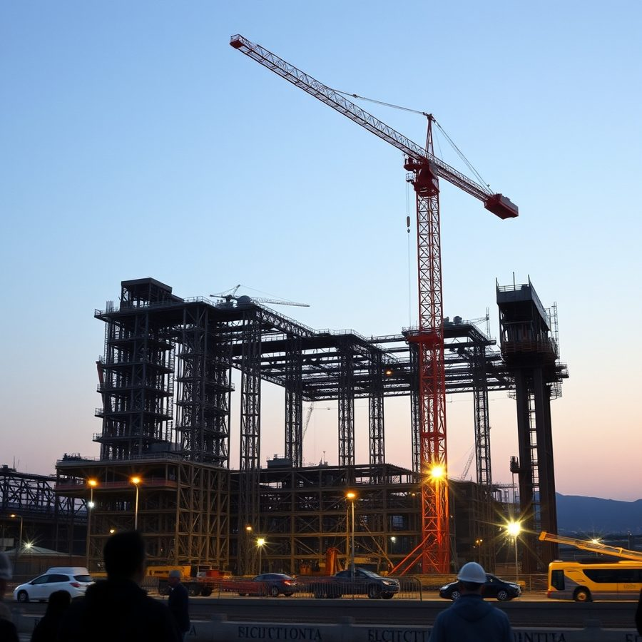

01
동해 AI 데이터센터 착공…15조 원 투입
기술GS그룹 동해에 아시아 최대 규모 구축, 정부 총력 지원 약속

강원도 동해 산업단지에 15조 원 규모의 아시아 최대 AI 데이터센터가 첫 삽을 떴습니다. GS그룹이 주도하는 이번 메가 프로젝트는 제조업 중심이었던 동해 지역을 AI 산업의 핵심 거점으로 탈바꿈시킬 전망입니다.
이재명 대통령은 착공식에 직접 참석해 거대한 전환점이 시작됐다며 AI 경쟁 선도국 도약을 위해 정부 차원의 총력 지원을 아끼지 않겠다고 밝혔습니다.
데이터센터 인프라 확충이 가시화됨에 따라 강원 지역의 첨단 인재 양성과 연계 산업 생태계 조성이 본격화될지 주목됩니다.
참고: MBC 뉴스, 연합뉴스, KBC광주방송, 강원일보